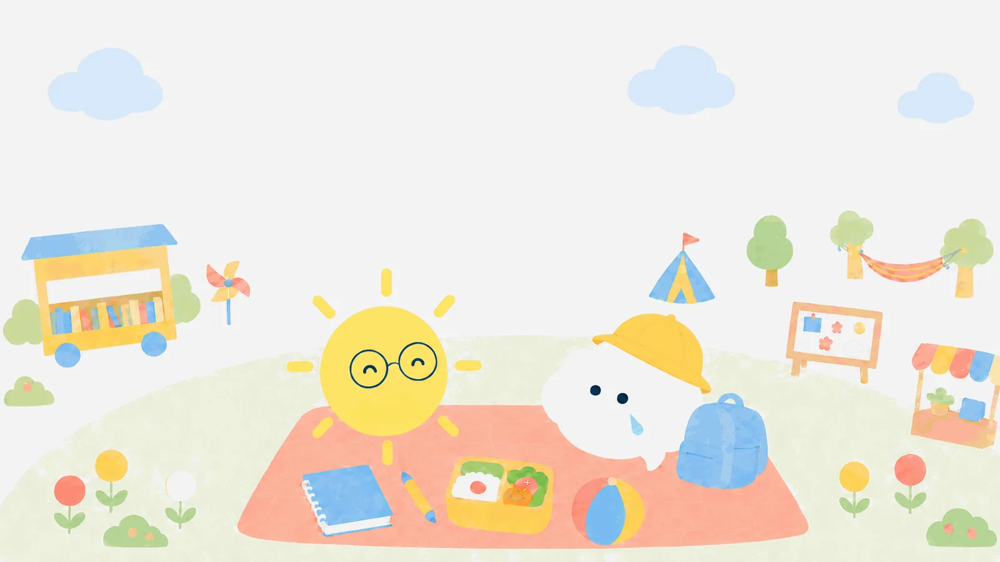

きょうのお客さま
クランボルツさんと
お弁当
計画どおりじゃなくて、いいの？心は天気。晴れの日も、雨の日も。
その空をじっと見つめ、よりそう。
今日は、モヤンの「予定どおりにいかない」お話です。
このお話は、学説と史実にもとづく創作の会話です。
試験で使う正式な表現は、各用語の「試験のことば」で確認してね。
おべんとうの時間 1
予定どおりに、すすまない。
🌠クランボルツさんおっと、いいところに来たね。ちょうどお弁当のおにぎりを落っことして、new べんとうプランを考えていたところさ。はっはっは。

モヤンわらいごとじゃないよ〜。ぼくなんて、夏休みの計画表が、もう3日目でくずれちゃったんだ。計画どおりにできないぼくは、だめなのかな。
🌠クランボルツさんだめなもんか！ いいかい、人のキャリアの8割は、予期しない偶然の出来事に影響されると言われているんだ。だからわたしは、偶然を計画的に味方につけようと考えた。 という考え方だよ。

サニー先生「計画がくずれた」は「新しい偶然が入ってくる余白ができた」でもある、ということだね。
モヤン偶然を、味方に……？ 偶然って、待つしかないんじゃないの？
気になる言葉を見つけたら、押してみよう。
おべんとうの時間 2
偶然を呼びこむ、5つの力。
🌠クランボルツさん待つだけじゃないんだ。偶然が起きやすくなる行動があってね。①好奇心②持続性③柔軟性④楽観性⑤冒険心——この5つの力を使う人のところに、いい偶然は集まってくる。
モヤンあ……ぼく、きのう初めて図書館の知らない棚を見にいったよ。それも好奇心？
🌠クランボルツさん最高の好奇心だ！ その棚で出会った1冊が、10年後のきみの仕事につながっているかもしれない。わたしはそういう話を、山ほど見てきたよ。
サニー先生だから「まだ決められない」も、わるいことじゃないんだよ。心を開いて待つことを、クランボルツさんはオープンマインドと呼んで大切にしたんだ。
モヤンそっか……！ 計画がくずれた日も、宝さがしの日に変えられるんだ！
おかわりの時間
クランボルツさんの、おかわりばなし
クランボルツさん(1928〜2019)が心理学の道に入ったきっかけは、なんと「大学で専攻を決めるとき、テニスのコーチが心理学の先生だったから」だと本人が語っています。偶然の出会いが人生を決めた張本人が、偶然の理論を作った——自分の人生そのものが、いちばんの証拠だったんですね。
参考: 本人の講演等で知られる逸話。お弁当のあとの遊び
ことばのタネを、ひろって帰ろう。
5問中、好きなところまでで大丈夫。わからなかった問題は、復習バスケットが預かります。
わたしの復習バスケット
雨のしずくも、持って帰ろう。
まだ問題は入っていません。
バスケットの中身は、この端末の中だけに保存されます。
まだ養成講座を選んでいない方へ: 家から受けられて、休んでも振替できる7校を、30秒でしぼれます。 30秒で合う学校をしぼる ▶︎